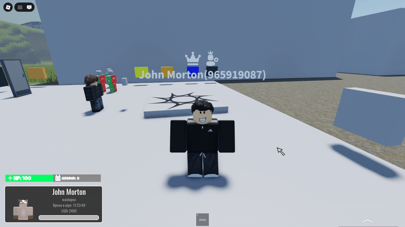

Раздел 1 — Основные игровые механики
Выбор персонажа
При первом заходе на сервер вам необходимо создать и выбрать персонажа, с которым вы будете играть. Вы также можете покупать изменить свою причёску и одежду за игровую валюту.

Меню взаимодействия
Данное меню открывается по нажатию клавиши G на клавиатуре, с помощью него вы можете взаимодействовать с игроками и транспортными средствами.


Гардероб
В нашем проекте реализована система гардероба, которая позволяет игрокам покупать и одевать различные предметы одежды и аксессуары для своих персонажей. Система включает в себя широкий выбор одежды и сохранение одетой одежды между сессий. Также в системе присутствует система масок которая позволяет игрокам скрывать свою личность во время криминальных действий.
